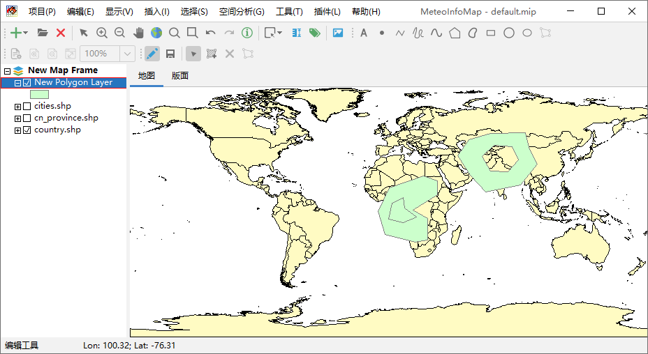
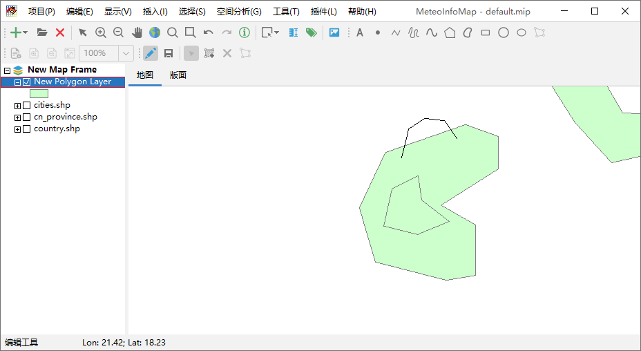
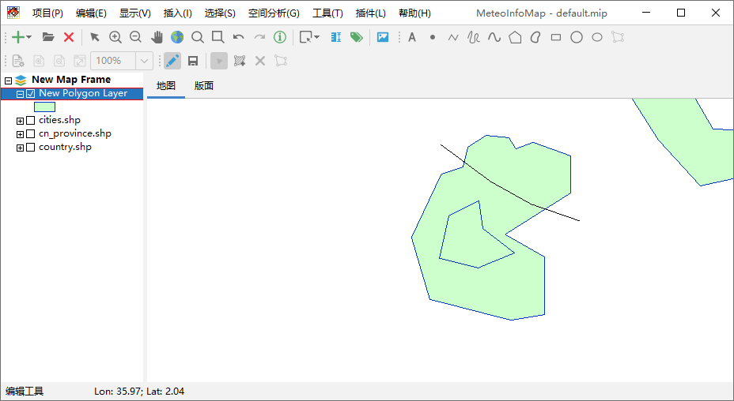
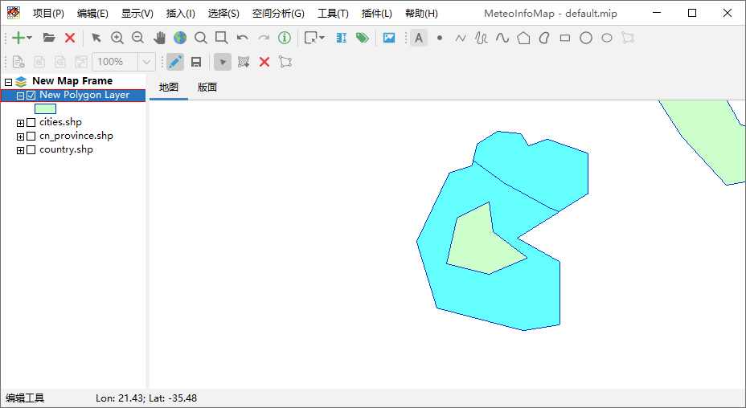
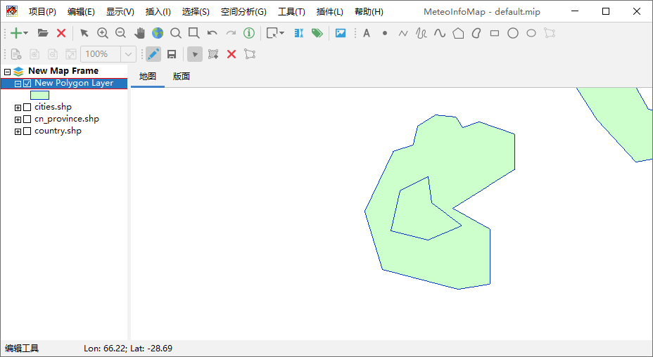

拓扑编辑¶
在“编辑”菜单中有“添加洞”、“填充洞”、“重塑要素”、“分割要素”、“合并选中的要素”等菜单对空间要素进行拓扑编辑。比如下图中右边 的多边形添加了一个洞，左边的多边形添加了一个被填充的洞。
选择“编辑 -> 重塑要素”菜单，用鼠标在多边形边界上进行重塑，达到编辑多边形边界的目的。
选择“编辑 -> 分割要素”菜单，用鼠标画一条跨过多边形的线就可以将多边形分割成两个多边形。
点击工具栏中的“编辑工具”按钮，按住shift键选中两个相邻的多边形，然后点击“编辑 -> 合并选中的要素”菜单可以将两个多边形合并 为一个。
 编辑完成后可以点击工具栏中的“保存编辑内容”对图层进行保存，再次点击“切换编辑状态”按钮退出使图层退出编辑状态完成图层编辑。